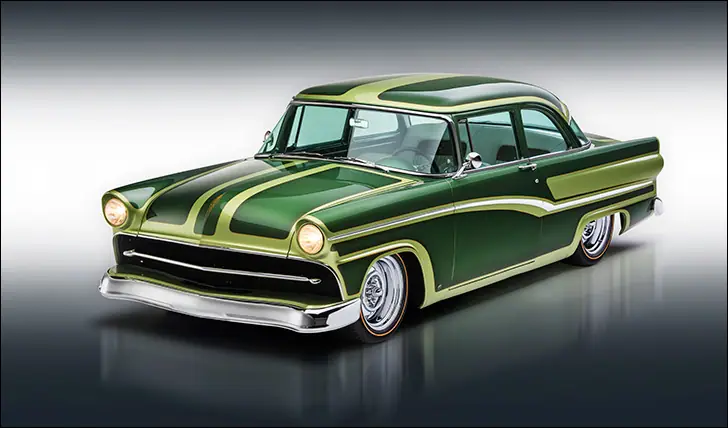
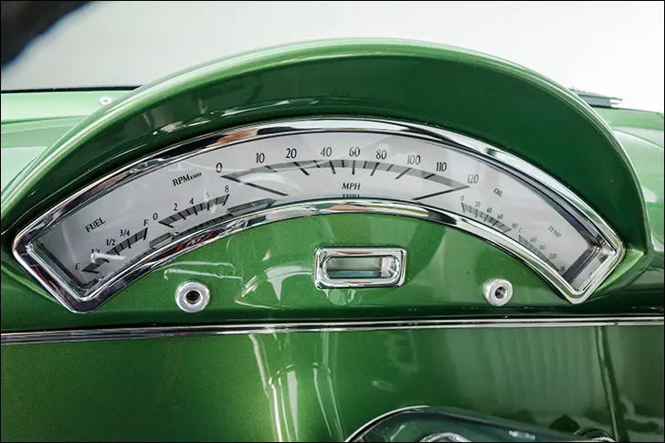
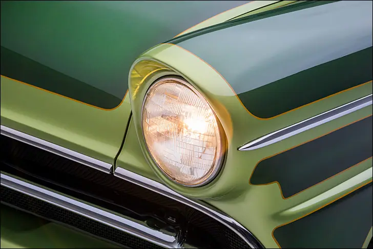
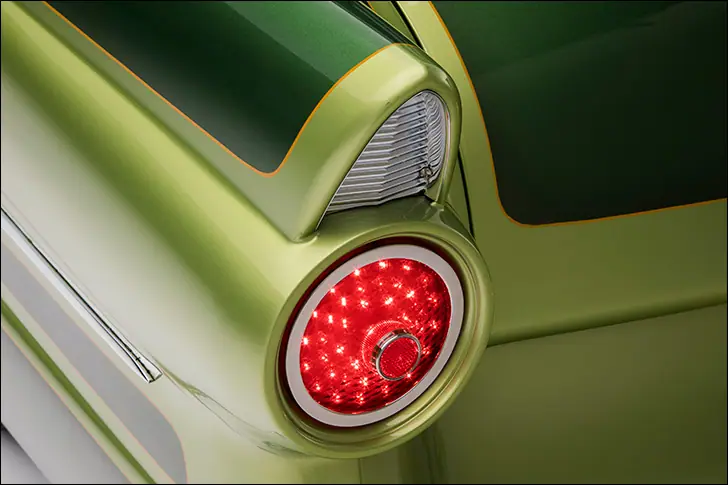
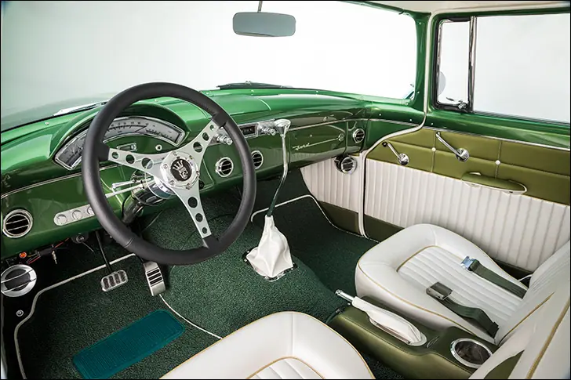
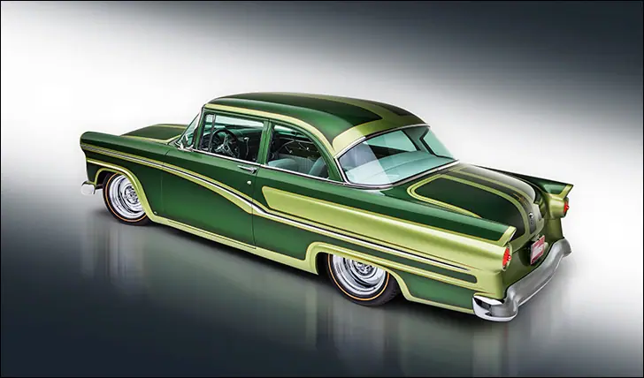

Street Rodder Road Tour 55 Ford
From Dakota Digital


Sleeping Beauty
After a long slumber, this Ford has a new lease on life
It’s safe to say that everyone reading the magazine has dreamt about discovering a diamond in the rough. I mean a real find; a pristine old car that’s been locked away in a building, safe from road salt, ham-fisted hot rodders and mother nature, for decades.
Troy Ladd of Hollywood Hot Rods (HHR) in Burbank, CA, recently lived out our collective fantasy when he happened upon a collection of eight vehicles that time forgot in Pasadena, CA. Squirreled away for half a century, the cars’ owner passed away, and the stars dictated that Troy have first crack. He wisely scooped up the octuplets and shipped them to the HHR shop. About this same time, the crew over at Street Rodder magazine was brainstorming ideas for their next Road Tour vehicle. Troy Ladd’s name seemed to be a front runner to build the cross-country reacher, and pilot Jerry Dixey floated the idea of a shoebox Ford as a platform. One call to Troy and the planets promptly fell in line.

Everyone involved in the project agreed that the ’55 should look the part of a 1950-60s custom, so automotive artist Eric Black whipped up a couple design ideas while the HHR team got busy stripping. The Roadster Shop scanned the stock frame and built a 21-st Century version, fleshed out with their own REVO IFS package. The REVO setup is kinda sorta based on a Mustang-II system, but with 30 years of refinement and improvements. The aft section utilizes a parallel four link system with a Panhard rod helping to locate the 9-inch axle housing. AFCO coilovers hold the whole works up, while a Flaming River steering rack points the way. Wheel Vintiques produced a set of Gennie wheels in a 17” diameter, but we know what they really are, don’t we? Chrome reverses with spider caps all the way baby!

With the two-door sedan body at an acceptable height, the HHR team got busy with a restrained shave and haircut for the boxy blue oval. Starting with the basics, it was nosed and decked, the headlights frenched and the rear fins extended slightly. A casual look might miss all of those mods, along with the shaved, massaged and tucked bumpers, but as Mr. Ladd sees it, respecting tradition is more important than shock and awe. Continuing on the subtle theme, the side trim was custom made, bringing elements from the Fairlane (dip) and Customline (straight)models. Perhaps the wildest work on the exterior (aside from the paint) is the grille. After removing the chrome mesh, bulging turn signals, well, everything in the cavity, HRR installed black mesh and a slender, floating center bar. All chrome work was handled by Sherm’s Custom Plating, a longtime Road Tour partner.
Josh Franklin at California Auto Worx (Riverside) along with Jack Fields took the reins after a look at Black’s rendering. As The Magazine themselves put it, this is “the most elaborate paintjob ever applied to a STREET RODDER Road Tour car.” Using PPG water-based paints, Kia Green (lighter) and Renault Green (darker) were sprayed in a decidedly ‘50s fashion, honoring the late great Larry Watson. For our younger readers, this style is referred to as panel paint; effectively creating or highlighting panels on the car with differing paint colors. Alex Horta striped the car freehand in gold before Franklin buried everything in six coats of clear.

Following the traditional exterior, the cabin more than looks the part of a vintage hot rod. White pleated vinyl covers both the Procar buckets as well as the one-off rear bench seat in true ‘60s fashion. All stitch work was handled by the crew at Elegance Auto Interiors lead by Mark Lopez. The inserts and green accent panels draw the paint styling inside, while the body color dash seals the deal. As long as we’re looking at the dashboard, you may notice that the stock ’55 hump has been changed around; gone is the “windowed” cluster that allows the sun to light up the cluster, replaced with a hand fabricated panel that accepts the Dakota Digital direct-fit system for a 1957 Ford car. It’s another subtle tweak that only the sharpest Ford aficionados will pick up on.

With the vintage build sheet you’ve just read through, I bet you’re expecting a Ford Y-block with a few carbs, a sano 302, or possibly a Cadillac engine under the hood. You’d be 100% wrong; the RS chassis should be a clue to the Coyote lurking. Ford Racing’s Gen III 5.0L crate engine is rated a 460hp, and for once was left alone. No fancy chrome bits or exotic intake manifolds, just a lot of stuff in place the way the engineers intended - what a concept! As for peripherals to make it run, Aeromotive ‘s Phantom system gets the fuel to the fire, while Ford’s own ignition system lights it up. Patriot headers linked to Smitty’s mufflers oust the exhaust, and an electric fan from SPAL chills the US Radiator cooler.
Just this summer, the finished Ford hit the STREET RODDER photo lab in LA before jet setting over to St. Paul for a public debut at the MSRA Back to the 50’s weekend. At the close of the event, Road Tour pilot Jerry Dixey hit the road to kick off the months-long driving event that winds across our great country. If this Ford could talk, I bet it never would have guessed that it’d be a famous, cross-country driven hot rod while it was sitting in that little old garage in Pasadena. Is there anything better than a comeback story? If you’ll excuse me, I’m off to cruise some back roads, keeping my eyes peeled for my own diamond in need of some polish.
Also on dakotadigital.com.